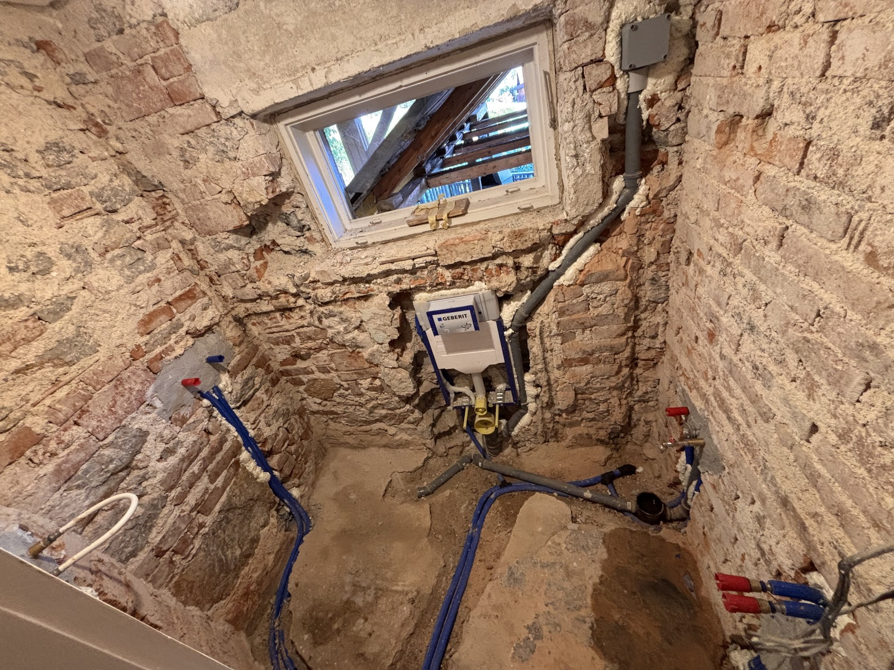
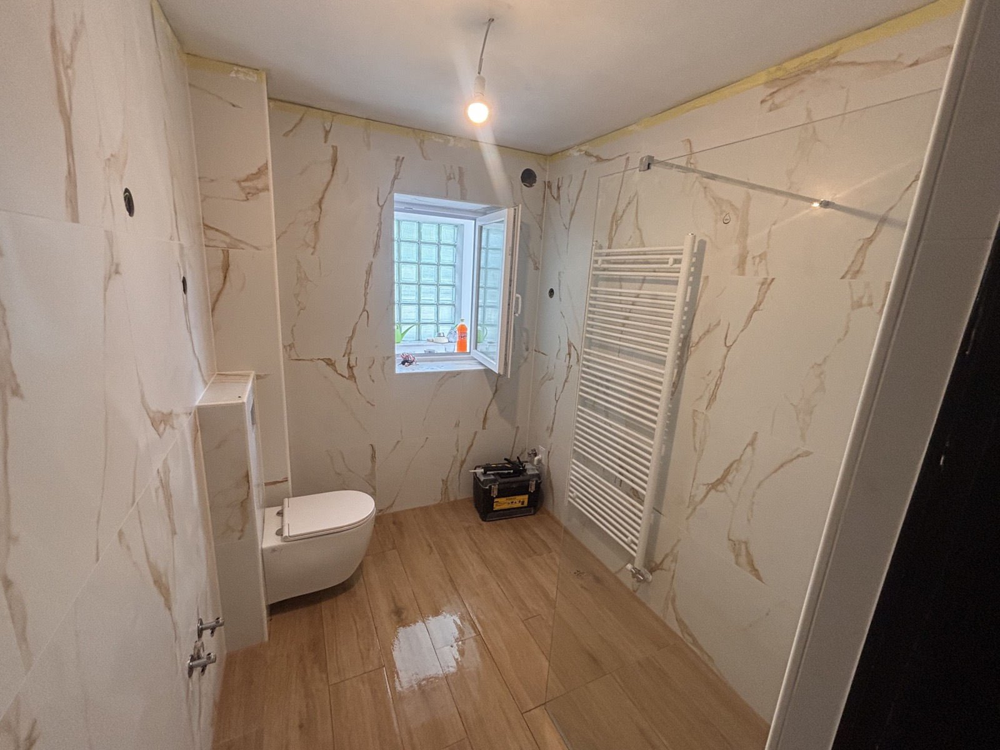
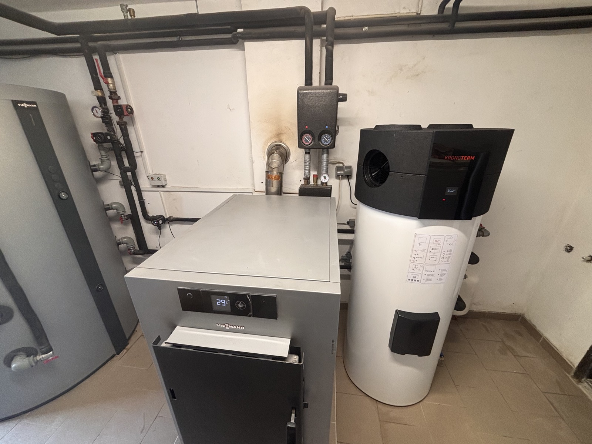
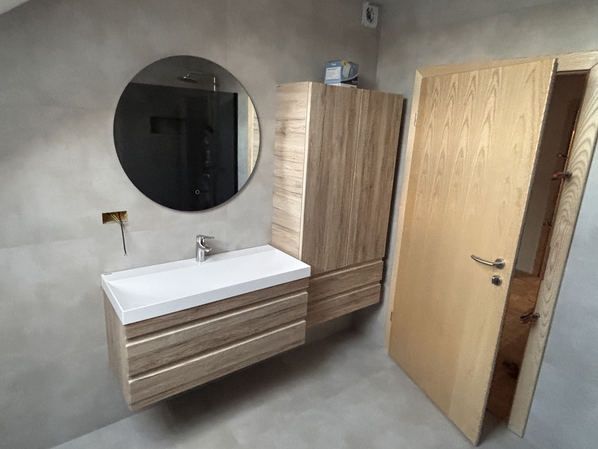
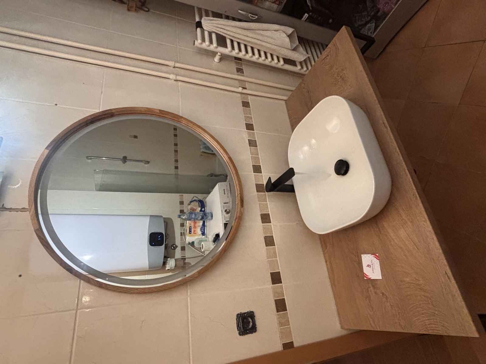

- Adaptacije kopalnic
- Vodovod
- Kanalizacija
- Radiatorji
- Talno ogrevanje
- Toplotne črpalke
- Klime
- Menjava bojlerjev
- Puščanje in okvare
- Montaža sanitarij

- 01
Dobra kopalnica se začne v steni, ne pri ploščicah.
- 02
Najprej cevi, odtoki in priključki. Šele nato keramika.
- 03
En mojster od prve meritve do zadnjega silikona.
- 04
Da po prenovi na vodo ne pomislite nikoli več.



[ Adaptacije kopalnic ]
Prenova kopalnice je več kot nova keramika. Najprej uredim, česar kasneje ne vidite: razvode, odtoke, tuš v nivoju tal in podometni WC. Nato montaža opreme in predaja.
[ Ogrevanje in toplotne črpalke ]
Radiatorji, talno ogrevanje, priklop kotlov in toplotnih črpalk ter montaža klim. Pri novogradnji ali prenovi, s tlačnim preizkusom pred predajo.
[ Vodovod in popravila ]
Puščanje, zamašen odtok, nova pipa ali WC kotliček. Majhne okvare hitro postanejo velike, zato pokličite, preden voda naredi škodo.
Ocena
Od fotografije do okvirne cene.
Izberite delo, pošljite do tri fotografije in na kratko opišite, kaj želite. Okvirno ceno vidite takoj, nato vas pokličem za ogled ali točno ponudbo.
Kako poteka:
- 01_Izberete delo
- 02_Dodate fotografije
- 03_Opišete in vpišete kraj
- 04_Dobite okvirno ceno
_O delu
Adaptacija kopalnice
Prenova kopalnice pod strešnim oknom: nov razvod vode in odtokov, viseči umivalniški element in stenski WC.



Pred PoPovlecite drsnik levo in desno
_Pokličite
Jasno od začetka.
040 720 568Če sem na delu in ne dvignem, mi pustite SMS. Oglasil se bom.